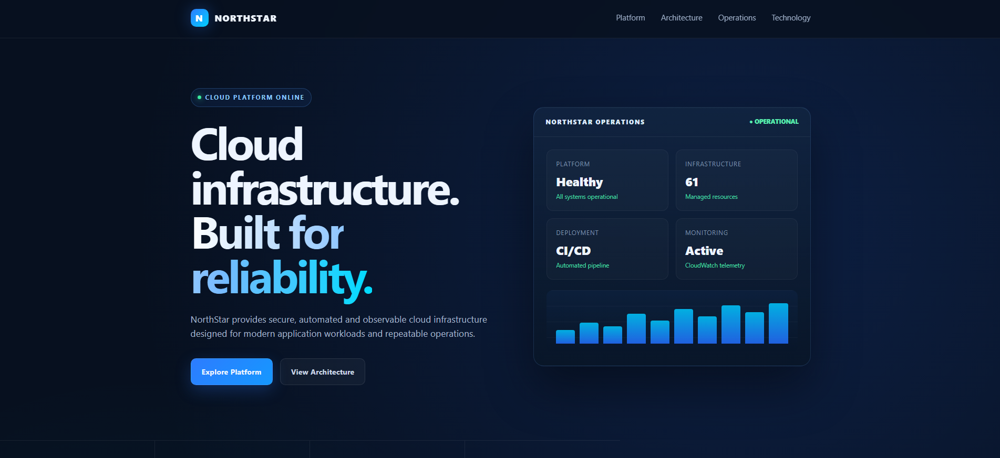
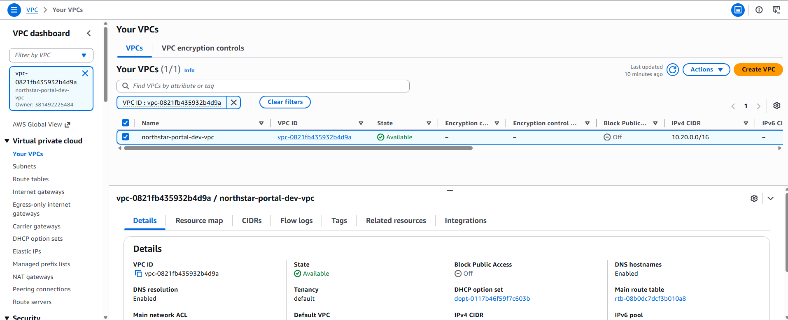
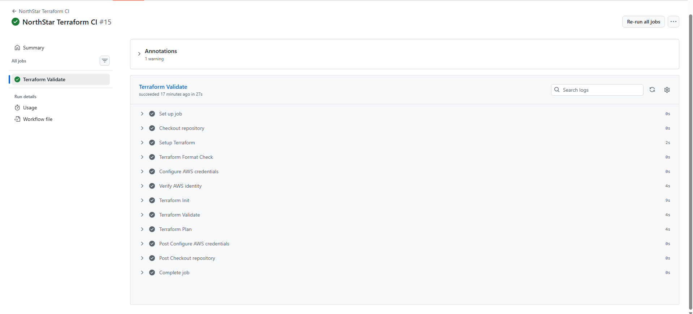
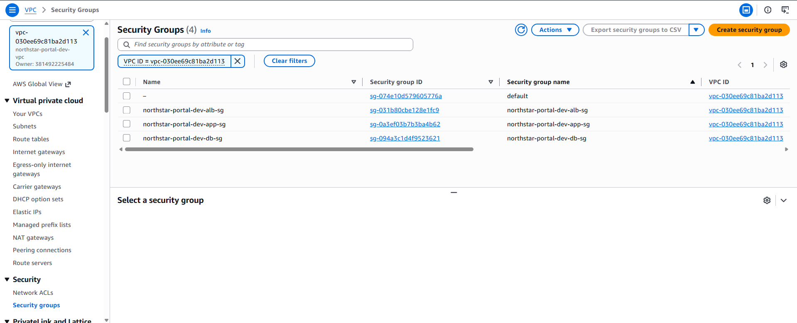
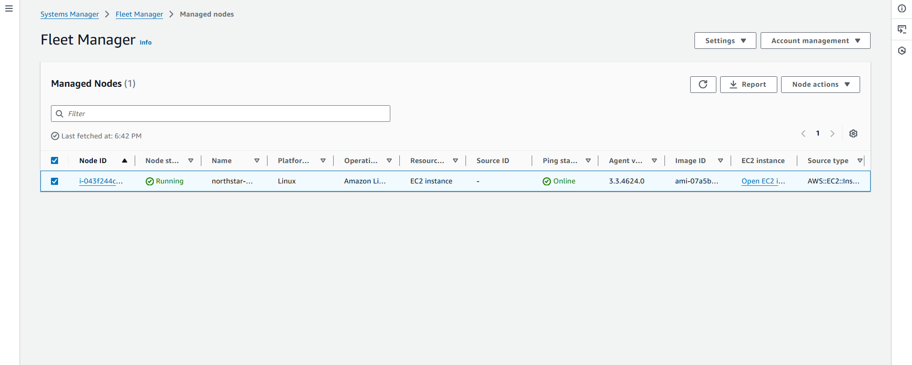
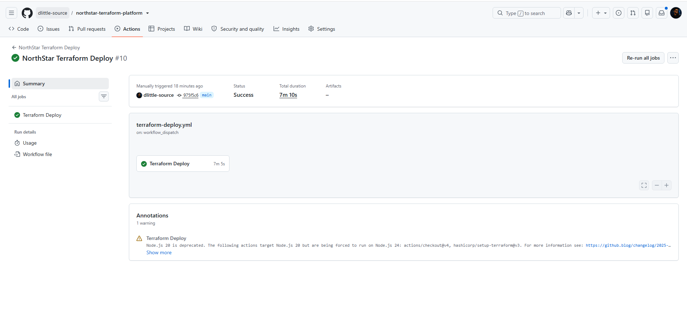
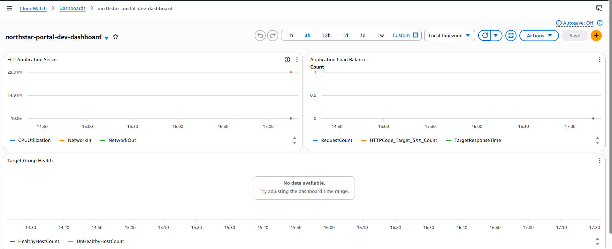

A production-style AWS infrastructure platform engineered with Terraform, secure cloud architecture, automated GitHub Actions delivery, centralized monitoring, and repeatable Infrastructure as Code workflows.

Modern application teams need infrastructure that can be deployed consistently, protected by design, monitored from day one, and changed without relying on fragile manual configuration.
Manually provisioned cloud environments create configuration drift, inconsistent security controls, deployment risk, and operational overhead.
NorthStar was designed to demonstrate how those concerns can be addressed through modular Infrastructure as Code, secure AWS architecture, automated delivery pipelines, and built-in observability.
Build a production-style AWS platform that could be recreated reliably from source control while maintaining clear separation between networking, security, compute, application delivery, monitoring, and CI/CD automation.
The goal was not simply to launch an application. The goal was to engineer the platform supporting it.
NorthStar combines modular Terraform, AWS networking, private compute, centralized security controls, application load balancing, GitHub Actions, CloudWatch monitoring, and operational alerting into one repeatable platform.
The environment was organized into reusable Terraform modules covering networking, security, compute, application delivery, and monitoring.
Application workloads run behind an Application Load Balancer while the EC2 application server remains in a private subnet, reducing unnecessary direct exposure to the internet.
NorthStar uses a structured VPC design separating internet-facing, application, and database network tiers while supporting controlled outbound connectivity and centralized traffic visibility.

The platform provisions a dedicated VPC with public, application, and database subnet tiers distributed across availability zones.
Public infrastructure supports controlled internet access and load balancing, while the application workload remains private and communicates through explicitly defined routing and security boundaries.
VPC Flow Logs provide network-level visibility for troubleshooting, auditing, and operational monitoring.
Terraform defines the NorthStar environment as reusable code instead of relying on manual AWS Console configuration.
Networking, security, compute, application delivery, monitoring, IAM, logging, and supporting services are provisioned through Terraform.
The configuration uses modular components and environment-specific variables so infrastructure behavior can be changed deliberately while preserving a consistent deployment workflow.
Remote Terraform state is maintained in Amazon S3 so infrastructure state is separated from the engineer's local workstation.

NorthStar applies layered controls across network access, identity, encryption, auditing, instance management, and application exposure.


Application compute resides in private networking rather than being directly exposed to the public internet.
IAM roles and AWS Systems Manager provide controlled operational access to the application server.
Encrypted storage, KMS-backed controls, CloudTrail, and centralized logging strengthen auditability and data protection.
GitHub Actions validates Terraform changes, creates infrastructure plans, authenticates securely to AWS using OIDC, and executes controlled deployments.

NorthStar integrates CloudWatch dashboards, metrics, alarms, VPC Flow Logs, and SNS notifications to provide visibility into infrastructure health and application delivery.
CloudWatch provides centralized visibility across EC2 and Application Load Balancer metrics, allowing platform health to be evaluated without inspecting individual resources manually.
CloudWatch alarms and SNS notifications establish an operational response path when monitored conditions move outside expected thresholds.
The result is infrastructure designed not only to deploy successfully, but also to remain observable after deployment.

NorthStar demonstrates the complete engineering lifecycle of a modern AWS environment rather than a collection of disconnected cloud resources.
A multi-layer AWS environment provisioned and managed through Terraform.
Networking through CI/CD implemented as an incremental platform build.
GitHub Actions handles Terraform validation, planning, authentication, and infrastructure deployment.
Application compute remains private while traffic is delivered through an Application Load Balancer.
CloudWatch dashboards, alarms, metrics, logs, and SNS provide operational visibility.
The complete environment can be created and destroyed through Terraform, supporting controlled lifecycle management and cost discipline.
Review the source code, Terraform modules, engineering documentation, GitHub Actions workflows, and complete eight-phase implementation in the NorthStar repository.